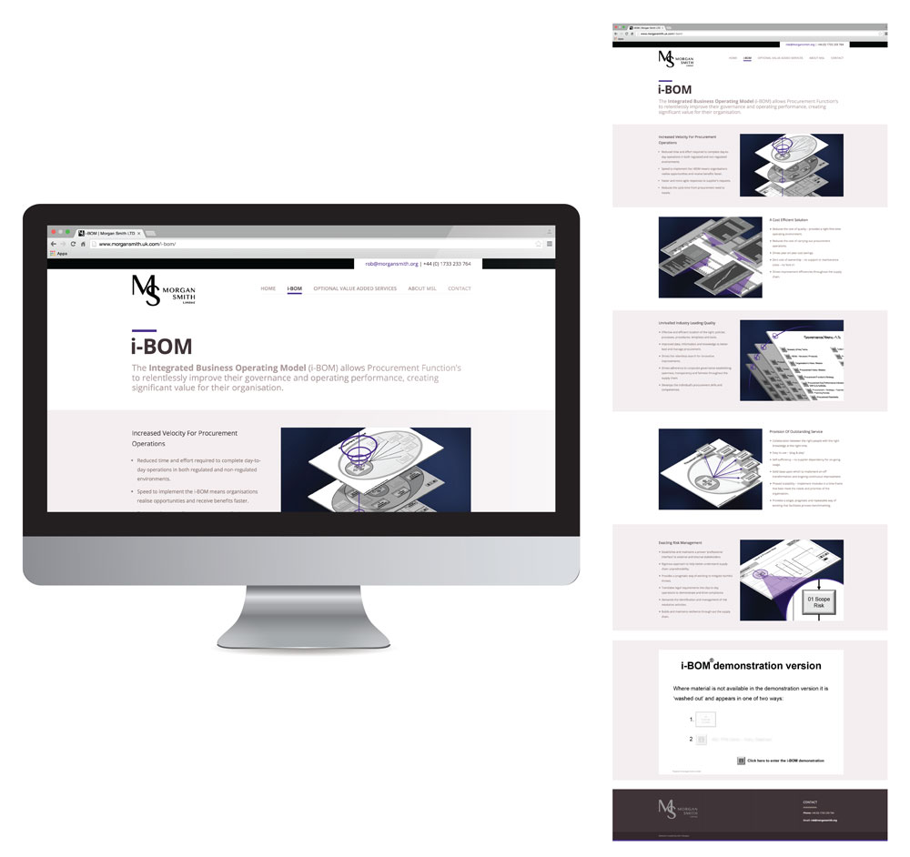
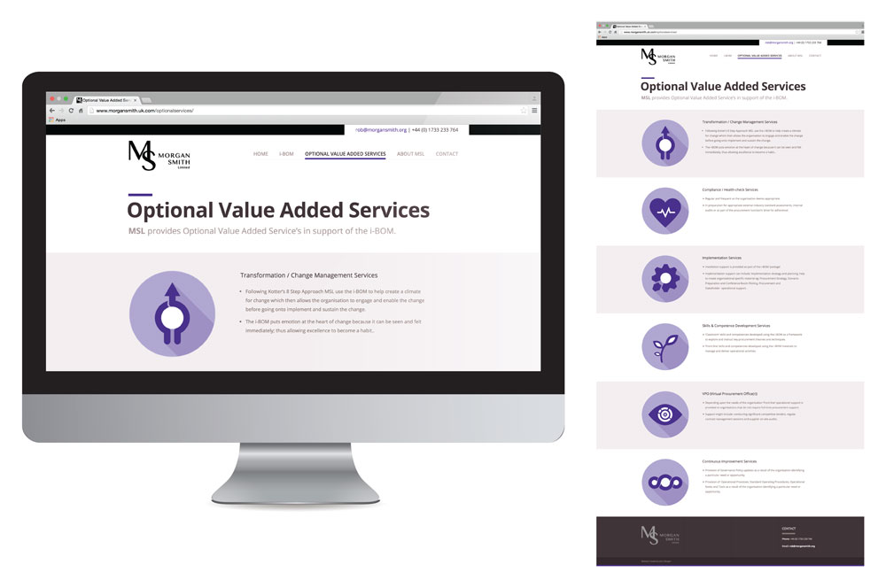

Morgan Smith approached me and asked for a Web Site, my response was “Why?”
I helped the client identify why they wanted a website, what the driving motivations and goals behind this decision were and what the real problem they were trying to solve was. By identifying and clarifying the problem I was able to design and develop a complete digital experience that communicated the value of Morgan Smiths iBOM (Integrated Business Operating Model).
Morgan Smith - “John has outstanding: technical, interpersonal and communication skills. He placed us at the center of the design process; supporting, questioning and “stress testing” as necessary so that the final design surpassed all our expectations and has since delivered tangible significant results to our business.”


